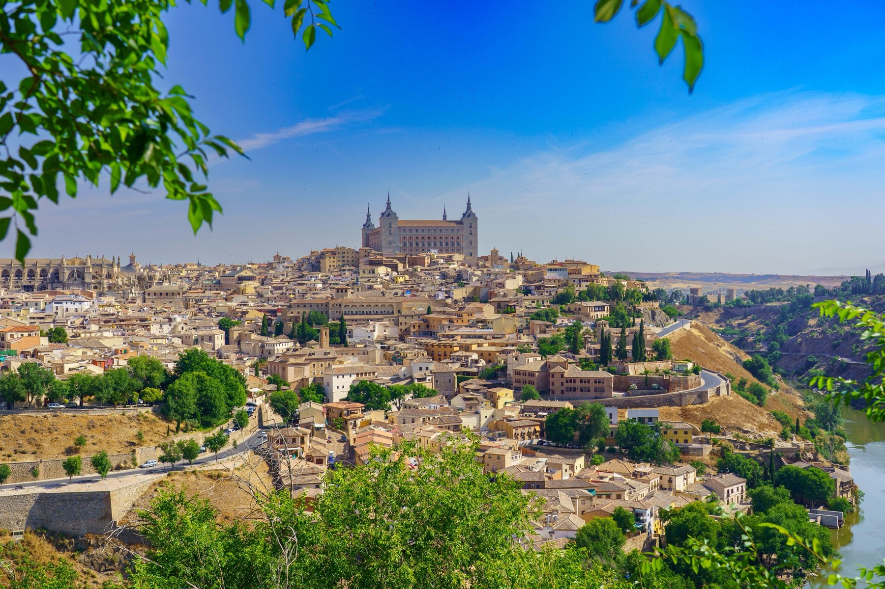
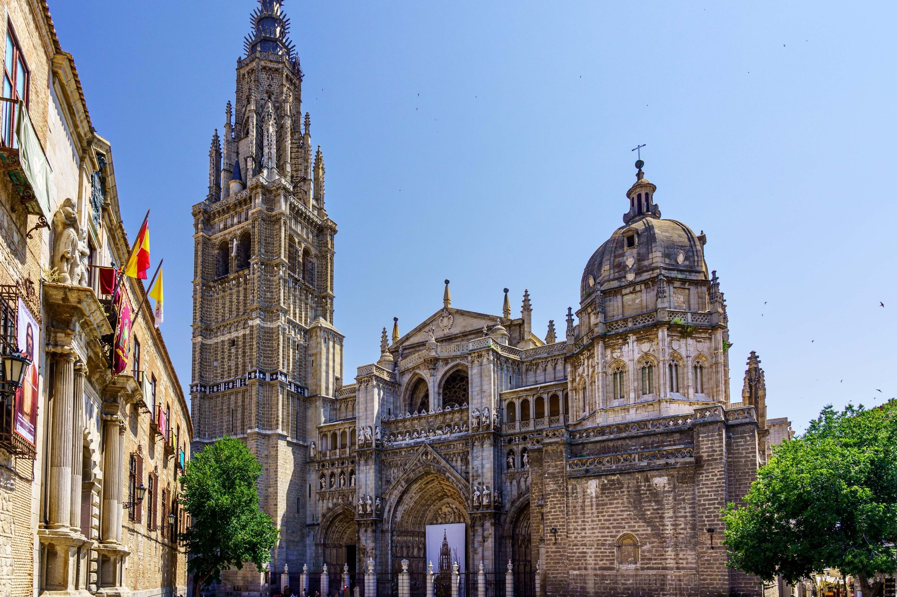
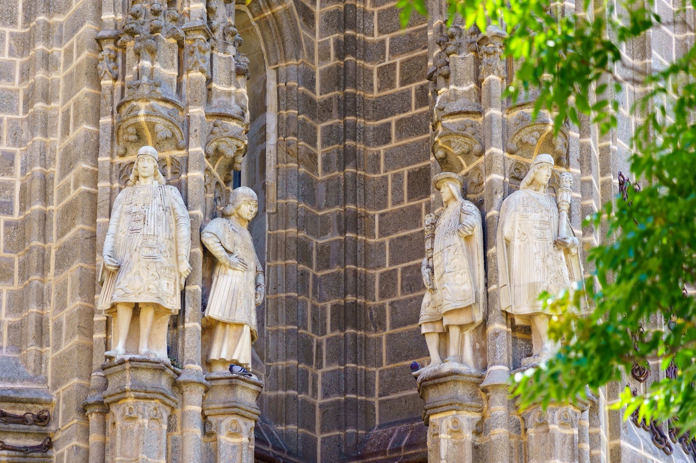
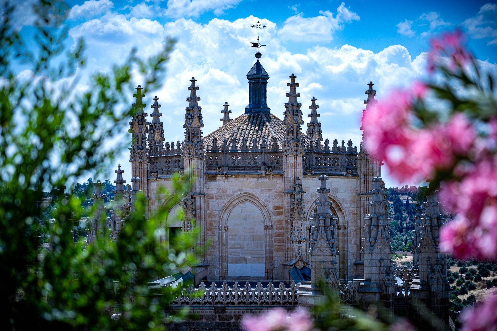
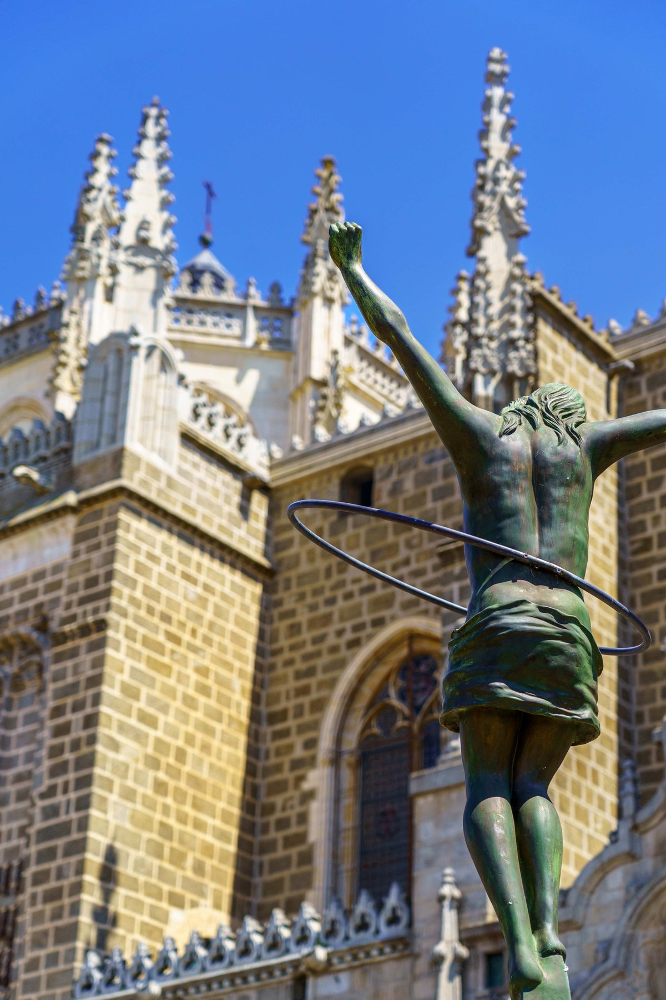
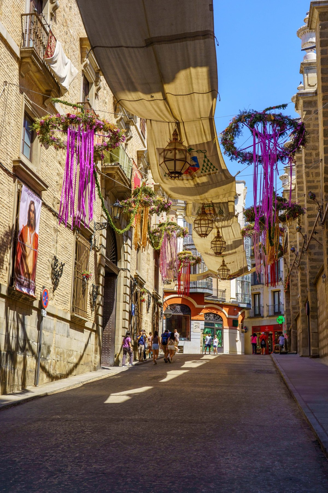
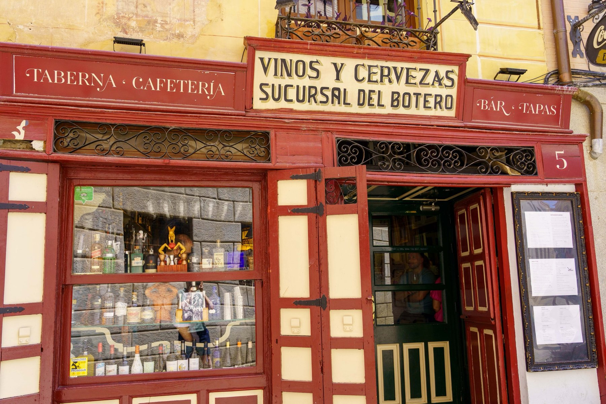

Toledo
Perched on a rocky bend of the Tagus, Toledo announces itself from a distance — the Alcázar's four towers crowning a hilltop skyline that hasn't changed much since El Greco painted it. Inside the walls, the Cathedral dominates everything: a soaring Gothic bell tower and dome, kings standing watch from niches on its facade, and a chapel apse glimpsed through blooming oleander. A modern bronze figure, caught mid-motion, adds a playful note against all that stone. During Corpus Christi, the old town leans further into its history still, with entire streets canopied in fabric awnings and strung with flowers and ribbons for the festival. It's a city built for wandering slowly, which makes it easy to end up at a place like the Taberna Sucursal del Botero — vinos y cervezas, tapas, and a good excuse to sit down.






